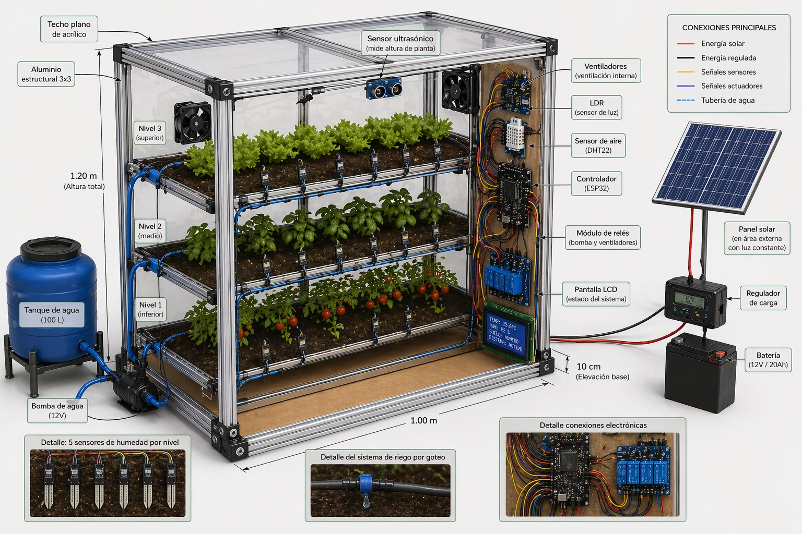
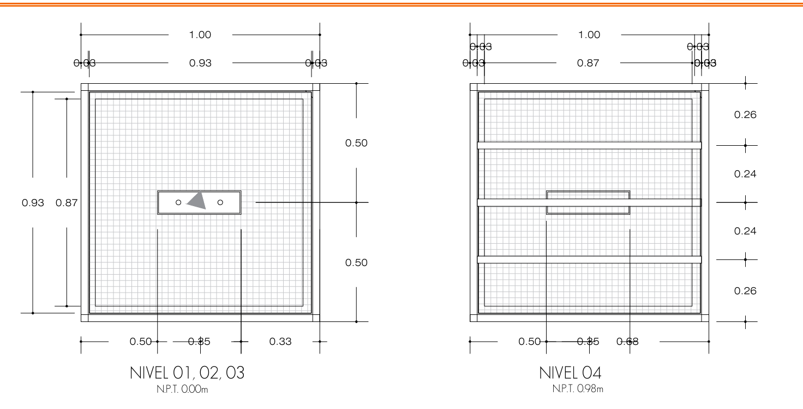

Tlālli Verde
Invernadero Inteligente
TECNOLOGÍA QUE NUTRE LA TIERRA
TECNOLOGÍA QUE NUTRE LA TIERRA
Distribución de sensores, sistema de riego y conexiones energéticas.

Geometría de alzados y diseño de instalación hidráulica.
